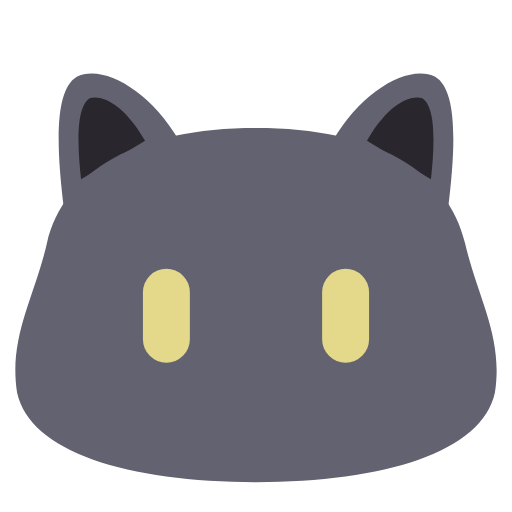
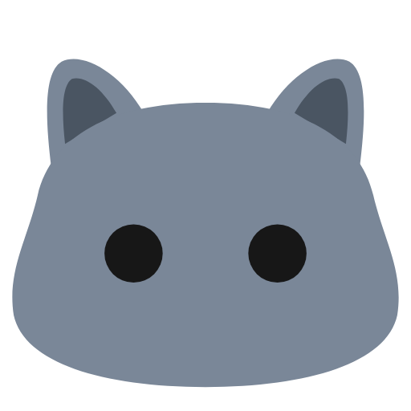
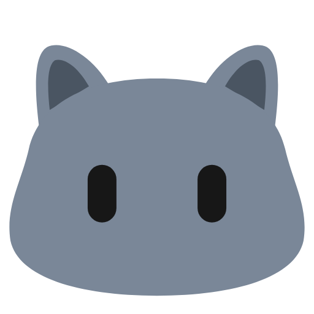
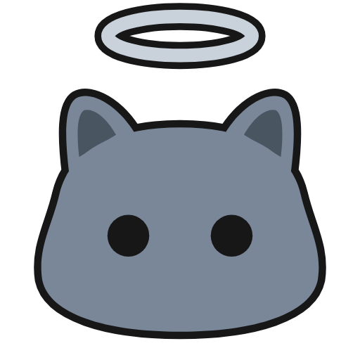
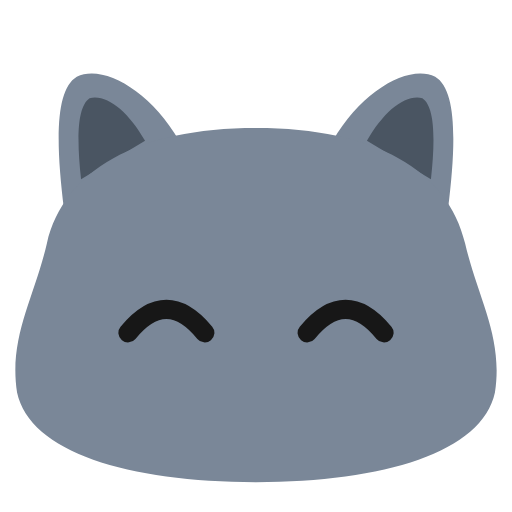

#626270#29272D#E4D98AEmpat arah untuk Halo sebagai kucing British Shorthair kelabu: rata, muka bulat berpipi, telinga kecil yang sama tinggi, mata hitam. Tiada mulut, hidung atau misai. Setiap satu dipapar atas latar cerah dan gelap.
#7A8798#4A5562#171717#C9D1DABeza dari mascot Oyenza: Oyen oren, satu telinga tajam tegak dan satu lagi terlipat, kepala segi empat bulat yang bawahnya rata. Halo kelabu, kedua-dua telinga kecil, bulat dan sama, tiada lipatan, pipi tembam paling lebar di bawah mata, dagu bulat, mata lebih besar.



